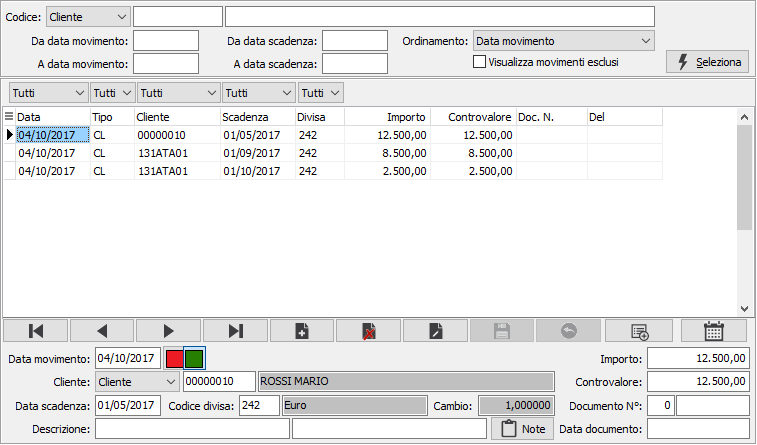
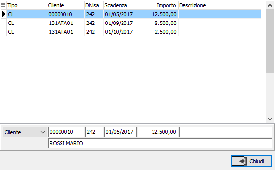
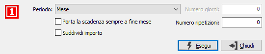

Movimenti cash flow
La procedura permette di inserire manualmente movimenti relativi a scadenze future di clienti, fornitori o sottoconti, che non sono ancora stati contabilizzati, per poter avere una situazione finanziaria dei crediti e debiti più vicina alla realtà aziendale e non legata ai soli dati già registrati.
La gestione dei movimenti è totalmente manuale, quindi nel momento in cui i movimenti siano effettivamente contabilizzati devono essere modificati o cancellati manualmente da questa procedura.
I movimenti inseriti possono essere inclusi nell’analisi dei flussi finanziari, se attivata l’opzione “Includi movimenti extracontabili”.

La procedura consente di visualizzare e manutenere i movimenti già inseriti e di inserirne di nuovi; nei parametri di selezione viene richiesto, nel campo “Codice”, il tipo di codice (sottoconto, cliente, fornitore o tutti) di cui effettuare la selezione dei movimenti, tale campo viene proposto in base alla scelta di menù da cui viene eseguito il programma, la selezione può essere effettuata per data movimento e/o per data scadenza, l’ordinamento può essere effettuato per data movimento, per data scadenza o per tipo codice impostato precedentemente, è inoltre possibile includere i movimenti esclusi. Eseguendo la selezione vengono visualizzati i movimenti presenti.
I movimenti inclusi sono visualizzati in colore nero mentre i movimenti esclusi sono visualizzati in colore rosso, tramite i bottoni è possibile includere od escludere il movimento su cui si è posizionati.
Nel caso di inserimento di nuovi movimenti la data del movimento, la data scadenza e il conto vengono proposti in base a quanto impostato nei parametri di configurazione.
Tramite questo bottone viene richiamata la maschera di inserimento rapido dei movimenti, anche in questo caso le date e il conto vengono proposti in base a quanto impostato nei parametri di configurazione.

Tramite questo bottone è possibile richiamare la finestra di generazione scadenze.

La finestra consente di impostare una periodicità a scelta tra Mese, Trimestre, Quadrimestre, Semestre, Anno o Giorni specifici da impostare nell'apposito campo; consente di spostare le scadenze che saranno generate alla fine del mese spuntando l'apposita casella e di indicare quante ripetizioni si vogliono generare; il parametro "Suddividi importo" indica se suddividere l'importo di partenza (casella con segno di spunta); se spuntata l'importo sarà suddiviso fra il movimento base e le ripetizioni richieste, altrimenti tale importo sarà utilizzato per ogni scadenza generata.